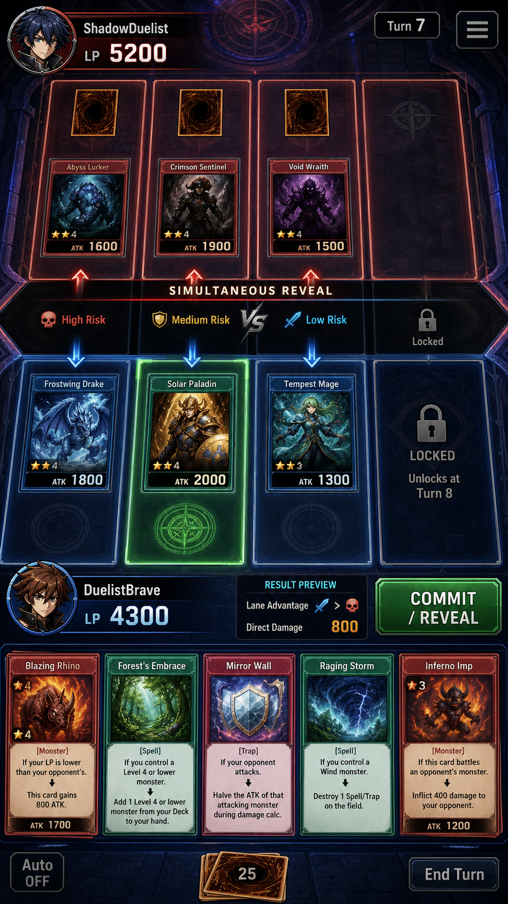

[P] 기존 실물/온라인 TCG는 상대와 실시간 대전을 위한 준비(덱 구성, 규칙 숙지, 대전 상대 매칭)에 진입장벽이 있다.
[F] 본 프로젝트는 GameRoom, DeckBuilderFlow, BattleResolver, AIEngine 테스트 모듈이 존재하는 것으로 보아 덱 빌드→대전 방→AI 상대 대전 흐름을 목표로 한다.
[P] AI 상대(AIEngine)를 둔 이유는 실시간 매칭 없이도 즉시 대전을 시작할 수 있게 하려는 것으로 추정된다.
[P] "덱을 짜고, 소환하고, 공격하고, 다음 턴을 준비한다" — 유희왕 유사 TCG의 요약 및 재도전 사이클.
[P] 포지셔닝: 웹/일렉트론 기반 개인 포터블 실행 파일(YugiohLegend_v0.9.0_portable.exe)로 배포되는 경량 TCG 시뮬레이터.
[P] 이름: 김도현, 27세, 웹 개발자, 퇴근 후 30분 내외 짧게 카드게임 한 판을 즐기고 싶은 상황. 별도 설치나 계정 생성 없이 포터블 실행 파일로 바로 대전을 시작하길 원한다.
[F] persona_playtest_feedback.md 문서가 존재하여 실제 플레이테스트 피드백 수집 활동이 있었음을 확인.
[P] 카드 소환-공격-방어 판단의 턴제 전략성.
[P] 몬스터/마법/함정 카드(카드 아트 19종 확인: dark_knight, iron_golem, mirror_snare 등)를 활용한 조합 플레이.
[F] card_art_atlas.png 존재로 카드 아트 통합 관리 방식을 사용 중임을 확인.
유저가 선택을 하면 결과가 되고, 그 결과 때문에 다시 선택을 한다.
[P] 정확한 순환 문장: "덱에서 카드를 뽑고, 몬스터를 소환하거나 세트하고, 공격을 선언하고, 전투를 해결하고, 턴을 종료하여 다시 카드를 뽑는다."
[F] BattleResolver.test.ts, BattlePreview.test.ts 존재로 전투 해결 및 전투 예측(프리뷰) 로직이 구현 대상임을 확인.
[P] 실행 → 덱 선택/자동 매칭 → 선공 결정 → 첫 카드 드로우 → 첫 몬스터 소환 또는 세트 → 턴 종료까지가 목표 흐름으로 추정된다.
[F] DeckBuilderFlow.test.ts 존재로 덱 구성 단계가 온보딩 흐름의 일부로 확인된다.
[P] 유희왕 유사 규칙: 라이프 포인트 소진 또는 덱 소진 시 패배로 추정.
[F] CardCatalog.test.ts, BattleResolver.test.ts 존재로 카드 카탈로그 검증과 전투 판정 로직이 별도 모듈로 분리되어 있음을 확인.
[F] client/public/assets/cards 하위에 19개 카드 아트 파일 확인(예: hero_warrior, flame_wizard, sky_lancer, relic_devourer 등).
[P] 카드 팩/코스트 기반 경제 시스템 여부는 확인되지 않았으며, 현재는 고정 카드 풀 기반 덱 구성으로 추정된다.
[F] docs/superpowers/specs/2026-05-14-yugioh-legend-design.md, 2026-07-16-rival-pressure-preview-design.md 두 건의 설계 스펙 문서 존재.
[P] rival-pressure-preview 스펙은 상대 위협 예측(BattlePreview) 기능과 연관된 것으로 추정되며, 전투 전 결과 예측 단계 도입이 핵심 교훈으로 보인다.
[제안] 카드 배틀 벤치마크의 핵심 행동은 카드 선택 → 소환·공격 선언 → 전투 결과 확인의 3단계다. 적용 교훈은 선언 전에 대상·피해·반격 가능성을 한 화면에서 예측하게 하는 것이다.
- KPI1: 첫 대전 완료율 70% 이상 — [P] 세션 로그에서 게임 시작 대비 종료 이벤트 비율로 측정 예정.
- KPI2: 평균 1턴 소요 시간 30초 이내 — [P] BattleResolver 호출 타임스탬프 간격으로 측정 예정.
(현재 코드/문서에서 실측 수치는 확인되지 않아 목표치는 제안 단계).
5개 UI 상태 [P]: 1) 덱 빌더 화면, 2) 대전 대기/매칭 화면, 3) 대전 진행 화면(필드+HUD), 4) 전투 프리뷰 오버레이(BattlePreview 관련), 5) 승패 결과 화면.
[F] UIArtReferences.test.ts 존재로 UI에서 사용하는 카드 아트 참조 무결성을 검증하는 테스트가 있음을 확인.
[P] 카드 풀이 19종 수준으로 100개 이상 데이터 상황은 현재 범위에서 확인되지 않는다.
[P] 긴 카드명/효과 텍스트에 대한 말줄임 처리 여부는 코드 미열람으로 확인되지 않았다.
[P] 현재 문서·테스트 목록에서 접근성(색맹 대응, 키보드 내비게이션, 스크린리더) 관련 항목은 확인되지 않았다.
[F] docs/sfx-vfx-candidates-20260808.md 문서 존재로 사운드/이펙트 후보 검토 활동이 있었음을 확인.
[P] 구체적 적용 사운드/이펙트 목록은 문서 미열람으로 확인되지 않았다.
| 모듈 | 상태 근거 |
|---|---|
| AIEngine | 테스트 파일 존재(F) |
| BattlePreview | 테스트 파일 존재(F) |
| BattleResolver | 테스트 파일 존재(F) |
| CardCatalog | 테스트 파일 존재(F) |
| DeckBuilderFlow | 테스트 파일 존재(F) |
| GameRoom | 테스트 파일 존재(F) |
| UIArtReferences | 테스트 파일 존재(F) |
[F] package.json에 test 스크립트(npm run test --workspace=server)와 build:all, electron:build 스크립트 존재.
[F] YugiohLegend_v0.9.0_portable.exe 산출물 파일이 저장소 루트에 존재하여 최소 1회 이상 포터블 빌드가 생성되었음을 확인. 실제 실행/테스트 통과 로그는 열람하지 않아 결과는 미확인.
[P] AI 상대 난이도 불균형으로 초반 이탈 위험.
[P] 카드 풀 확장 시 CardCatalog/UIArtReferences 검증 범위 미비로 아트 누락 리스크.
[F] next_improvement_instruction.md 문서 존재로 다음 개선 방향에 대한 별도 지시서가 관리되고 있음을 확인.
[F] next_improvement_instruction.md, persona_playtest_feedback.md 두 문서가 최근 관리 대상으로 확인된다.
[P] 우선순위는 플레이테스트 피드백 반영 및 다음 개선 지시서 이행으로 추정된다.